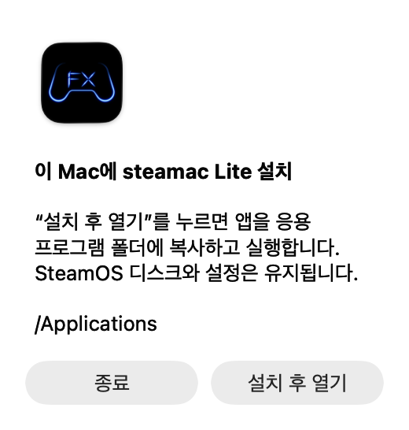

앱에서 업데이트하기
Lite.9부터 앱에서 업데이트할 수 있습니다. 1.9.8-lite.2부터는 실행할 때마다 확인하며 새 버전이 있을 때만 업데이트 창을 표시합니다.
- 업데이트 확인… 열기
Mac 화면 상단의 steamac Lite 메뉴에서 선택합니다. SteamOS 안의 Steam 메뉴가 아니라 Mac 앱의 메뉴를 사용합니다.
- 업데이트 누르기
새 버전이 표시되면 업데이트를 누릅니다. 다운로드와 파일 검증이 끝날 때까지 기다려 주세요.
- 설치 후 다시 열기 누르기
먼저 게임에서 필요한 내용을 저장한 뒤 누릅니다. SteamOS가 종료되면 앱을 교체하고 새 버전을 엽니다.
Mac 앱 본체를 교체하는 업데이트입니다. SteamOS 디스크, 설치한 게임, 기존 설정은 유지됩니다. 업데이트를 위해 새 디스크를 만들 필요는 없습니다.
DMG로 업데이트하기
Lite.8 이하를 사용하거나 앱이 열리지 않으면 이 방법을 이용해 주세요.
- 실행 중인 steamac Lite 종료
게임에서 필요한 내용을 저장한 뒤 steamac Lite를 종료합니다. 종료 중이면 완료될 때까지 기다려 주세요.
- 최신 DMG 다운로드
아래 버튼으로 Mac용 DMG를 다운로드합니다. GitHub의 Source code는 개발용 소스 코드입니다.
- 설치 후 열기 누르기
DMG를 열고 안에 있는 SteamAC Lite.app을 엽니다. 안내가 나오면 설치 후 열기를 눌러 기존 앱을 새 버전으로 교체합니다.


사진 확대 ↗BOOTH 온라인 설치 프로그램으로도 최신 앱을 받을 수 있습니다. 기존 앱이 있는 폴더를 설치 위치로 선택해 주세요.
업데이트 후 마이크 확인
Lite.13부터는 최초 실행과 업데이트 후 첫 실행 때 마이크 확인 창이 표시됩니다. 이미 허용된 경우에도 표시됩니다. 1.9.8-lite.1에서는 설정 → 사운드 → 입력 마이크에서 마이크를 선택할 수 있습니다. 선택은 저장되며 Mac의 기본 입력 설정은 바꾸지 않습니다. 설정 창은 스크롤과 크기 조절을 지원합니다.
앱의 확인 창과 macOS 권한 창은 별개입니다. OS 권한 창의 표시 여부는 macOS가 결정합니다.
여전히 소리가 입력되지 않을 때
- Mac의 시스템 설정 → 사운드 → 입력에서 사용할 마이크를 선택하고 입력 레벨이 움직이는지 확인합니다. steamac Lite는 Mac의 기본 입력 기기를 사용합니다.
- 시스템 설정 → 개인정보 보호 및 보안 → 마이크에서 steamac Lite의 권한을 확인합니다. 업데이트 후 작동하지 않으면 이미 켜져 있어도 이 앱의 권한을 껐다가 다시 켜 보세요.
- steamac Lite의 설정 → 사운드에서 다시 확인을 누릅니다. Steam 마이크 테스트와 VRChat에서 선택한 입력 기기도 확인해 주세요.
같은 버전에서 확인을 마치면 안내가 다시 표시되지 않습니다. 설정 → 사운드에서는 언제든 권한을 확인할 수 있습니다.
업데이트가 안 될 때
업데이트 알림이 나오지 않아요
1.9.8-lite.2부터 앱을 실행할 때마다 업데이트를 확인하며 새 버전이 있을 때만 알림을 표시합니다. 설정 → 일반에서 자동 확인이 켜져 있는지 확인하세요. steamac Lite → 업데이트 확인…에서 수동으로 확인할 수 있으며 건너뛴 버전도 확인할 수 있습니다. Lite.8 이하는 DMG 방법을 이용해 주세요.
다운로드·검증·교체에 실패해요
인터넷 연결과 Mac의 여유 공간을 확인하고 다시 시도해 주세요. 계속 실패하면 실행 중인 앱을 종료한 뒤 DMG 방법을 이용합니다. 검증 오류가 계속되면 표시된 오류 내용을 함께 보내 주세요.
업데이트 후 앱이 열리지 않아요
최신 DMG를 열고 응용 프로그램 폴더에 설치한 앱을 사용해 주세요. macOS가 실행 확인을 요청하면 배포 출처를 확인한 뒤 화면 안내를 따라 주세요. 여전히 열리지 않으면 아래 정보를 함께 보내 주세요.
해결되지 않는 경우
아는 범위에서 아래 정보를 적어 GitHub Issues 또는 BOOTH로 문의해 주세요.
- Mac 모델, 메모리 용량, macOS 버전
- 업데이트 전후 앱 버전
- 앱 내 업데이트·GitHub DMG·BOOTH 중 이용한 방법
- 멈춘 화면이나 오류 문구, 가능하면 해당 스크린샷
- 마이크 문제라면 내장·USB·Bluetooth 등의 종류와 Mac 입력 레벨의 반응 여부